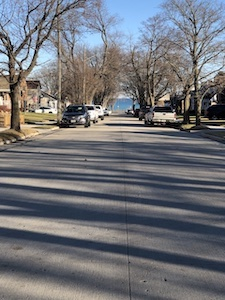
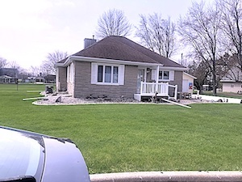

Features Sticky, Pulldowns and Responsive
Just like the fancy themes in Wordpress, except this is all written in html, css and javascript.
My next job is to consolidate CSS and create an INCLUDE. Then every page can have this menu, until them I have to buid them one-by-one.
Content below is to enable full page scrolling. So I am adding some photos for fun. Wilson St and S 9th St in Manitowoc, WI is where we live now. Laughing a bit, this home was built about 1955, so it is no great upgrade from the 1951 version in Hollandtown. I have to say that is false and true, considering the condition when we got it February 1st, 2021.  All this is true: All exterion doors & storm had to be replaced, it had not been maintained for 25-30 years, all stormwindows needed refurbishing, trees needed to come down and now the furnace + ducting is being replaced. Oh ya, I put in three windows to replace a 4' x 8' window set that could not stop any cold or hot weather. Aside from the basement didn't leak and most appliances worked, it was like our home in Hollandtown.
Home in Hollandtown This were the Van Abel family grew up (most of us). Our Dad, etc build this home around 1951 on 6 acres of land that our dad (we think) got it from the Van Abel Family. Folklure has it the Van Abel families (we don't know them all) owned most of Hollandtown land from somewhere in the 1800's. I wrote this above, but moving it to here. After Dad and Don died in 1963, our mom finally re-married in 1971 and sold the place for $15,000.